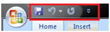

what is ms-word tutorials:
Microsoft Word is a computer application program written by Microsoft. It is mainly used to design text for presentation.
Our MS Word tutorial includes all topics of MS Word such as save the document, correct error, word count, font size, font style, apply a style, customize a style, page size, page margin, insert header and footer and more.
Brief History:
Microsoft word was released in 1983 as Multi-Tool Word. Its first version was based on the framework of Bravo which was world's first graphical writing program.
Microsoft renamed Multi Tool Word to Microsoft Word, and then in October 1983, Microsoft released its first version for the IBM PC.
In 1985, Microsoft ported it to the Macintosh which was different from its DOS-based counterpart, i.e. Macintosh offered various major interface changes.
In 1989, Microsoft released a new version of Word for its Windows operating systems. It was the Microsoft Word who introduced the concept of WYSIWYG (What You See Is What You Get), i.e. it allowed to create and display bold and italics text.
In 2014, Microsoft developed the source code for Microsoft Word for Windows 1.1a.
microsoft Button :
Microsoft Office Button is located on the top left corner of the window.It is a new user interface feature that replaced the traditional "File" menu. You can also see this button in Outlook while creating a new message, task, contact, etc.
When you click the button it offers a list of commands to perform different tasks which are New, Open, Save, Save As, Print, Prepare, Send, Publish and Close. These commands are described below the following image.
see the below image
Quick Access Toolbar :
Quick Access Toolbar lies next to the Microsoft Office Button. It is a customizable toolbar that comes with a set of independent commands. It gives you quick access to commonly used commands such as Save, Undo, Redo, etc.
see the img :
When you click the drop-down arrow next to toolbar it offers more commands. With a left click you can add any of these commands to Quick Access Toolbar. You can also remove the commands added to the tool bar. The indent, spacing values, individual styles and other features that appear on the ribbon cannot be added to quick access toolbar. The following image is showing the menu of quick access toolbar.
Title Bar
It lies next to the Quick Access Toolbar. It displays the title of the currently open document or application. It is present on almost all windows displayed on your computer. So, if there are several windows across the screen, you can identify each window by looking at the title bar. In many graphical user interfaces, you can also move a window by dragging the title bar.
Ribbon and Tabs
The Ribbon is a user interface element which was introduced by Microsoft in Microsoft Office 2007. It is located below the Quick Access Toolbar and the Title Bar. It comprises seven tabs; Home, Insert, Page layout, References, Mailing, Review and View. Each tab has specific groups of related commands. It gives you quick access to the commonly used commands that you need to complete a task.
Home tab:
The Home tab is the default tab in Microsoft Word. It has five groups of related commands; Clipboard, Font, Paragraph, Styles and Editing. It helps you change document settings like font size, adding bullets, adjusting styles and many other common features. It also helps you to return to the home section of the document.
Ruler
The Ruler is located below the Ribbon around the edge of the document. It is used to change the format of the document, i.e. it helps you align the text, tables, graphics and other elements of your document. It uses inches or centimeters as the measurements unit and gives you an idea about the size of the document.